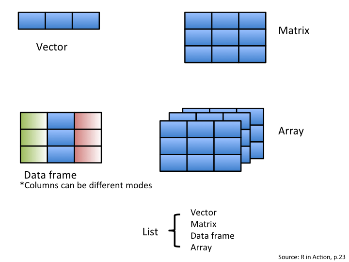

Chapter 5 Manipulating objects in R
5.1 Objects
You have learned so far how to use R as a calculator to obtain various numerical values. However, it can get tiresome to always write the same code down in the R console, especially if you have to use some values repeatedly. This is where the concept of object becomes useful.
R is an object-oriented programming language. What this means is that we can allocate a name to values we’ve created to save them in our workspace. An object is composed of three parts: 1) a value we’re interested in, 2) an identifier and 3) the assignment operator.
- The value can be almost anything we want: a number, the result of a calculation, a string of characters, a data frame, a plot or a function.
- The identifier is the name you assign to the value. Whenever you want to refer to this value, you simply type the identifier in the R console and R will return its value. Identifiers can include only letters, numbers, periods and underscores, and should always begin with a letter.
- The assignment operator resembles an arrow (
<-) and is used to link the value to the identifier.
The following code clarifies these ideas:
# Let's create an object called mean_x. The # symbol is
# used in R to indicate comments. It is not processed by R.
# It is important to add comments to code so that it can be
# understood and used by other people.
mean_x <- (2 + 6)/2
# Typing its name will return its value.
mean_x## [1] 4Here, (2 + 6) / 2 is the value you want to save as an object. The
identifier mean_x is assigned to this value. Typing mean_x returns
the value of the calculation (i.e. 4). You have to be scrupulous when
typing the identifier because R is case-sensitive: writing mean_x is
not the same as writing MEAN_X. You can see that the assignment
operator <- creates an explicit link between the value and the
identifier. It always points from the value to the identifier. Note that
it is also possible to use the equal sign = as the assignment operator
but it is preferable
not
to because it is also used for other operations in R, which can cause
problems when using it for assignment. Finally, imagine that the
operator <- and = follow their own order of priorities.
y <- x = 5## Error in y <- x = 5: object 'y' not foundy = x <- 5
y## [1] 5x## [1] 55.2 Good practices in R code
Name
- Try having short and explicit names for your variables. Naming a
variable
varis not very informative. - Use an underscore (
_), or a dot (.) to separate words within a name and try to be consistent! - Avoid using names of existing functions and variables (e.g.,
c,table,T, etc.)
Space
- Add spaces around all operators (
=,+,-,<-, etc.) to make the code more readable. - Always put a space after a comma, and never before (like in regular English).
5.2.1 CHALLENGE 5
Create an object (you decide the value) with a name that starts with a number. What happens? #### Solution {-}
An object name that starts with a number
will return the following error:
unexpected symbol in "your object name".
5.2.2 CHALLENGE 6
Create an object with a value of 1 + 1.718282 (Euler’s number) and
name it euler_value
5.2.3 The RStudio Environment
The Environment panel shows you all the objects you have defined in your current workspace
R TIP
Using the Tab key allows auto-completion of names. It speeds up command
entering and avoids spelling errors. For example, if you type eu and
then press tab, you will see a list of objects or functions beginning
with eu. Select euler_value (the object we just created) and press
enter. The euler_value identifier now appears at the command line.
If more than one element appears, you can use the arrow keys and press “Return” or use your mouse to select the correct one.
5.3 Data types and structure
5.3.1 Core data types in R
Data types define how the values are stored in R.
We can obtain the type and mode of an object using the function typeof().
The core data types are:
- Numeric-type with integer and double values
(x <- 1.1)## [1] 1.1typeof(x)## [1] "double"(y <- 2L)## [1] 2typeof(y)## [1] "integer"- Character-type (always between
" ")
z <- "You are becoming very good in this!"
typeof(z)## [1] "character"- Logical-type
t <- TRUE
typeof(t)## [1] "logical"f <- FALSE
typeof(f)## [1] "logical"5.3.2 Data structure in R: scalars
Until this moment, we have created objects that had just one element inside them. An object that has just a single value or unit like a number or a text string is called a scalar.
# Examples of scalars
a <- 100
b <- 3/100
c <- (a + b)/b
d <- "species"
e <- "genus"By creating combinations of scalars, we can create data with different structures in R.
Using R to analyze your data is an important aspect of this software. Data comes in different forms and can be grouped in distinct categories. Depending on the nature of the values enclosed inside your data or object, R classifies them accordingly. The following figure illustrates common objects found in R.

5.3.3 Data structure in R: vectors
The first object is a vector. It is one of the most common objects
in R. A vector is an entity consisting of several scalars stored in a single object. All
values in a vector must be the same mode. The main modes in R are
numeric, character and logical. Character vectors include text strings or a mix of text
strings and other modes. You need to use "" to delimit elements in a
character vector. Logical vectors include TRUE/FALSE entries only. A
vector with a single value (usually a constant) is called an atomic
vector.
Before we look at how to create different types of vectors, let’s have
a look at the generic method of creating vectors. If you recall what you
have just learned, you will first have to identify some value you want
to put in a vector and then link it to an identifier with the assignment
operator (i.e. create an object). When you have more than one value in
a vector, you need a way to tell R to group all these values to create a
vector. The trick here is to use the c() function. Don’t worry, you
will learn about functions pretty soon in one of the following sections.
For now, just remember to put your values between parentheses next to
letter c() in this format:
vector.name <- c(value1, value2, value3, ...). The function c()
means combine or concatenate. It is a quick and easy function so
remember it!
Now that you know the generic method to create a vector in R, let’s have a look at how to create different types of vectors.
# Create a numeric vector with the c (which means combine
# or concatenate) function. We will learn about functions
# soon!
num_vector <- c(1, 4, 3, 98, 32, -76, -4)
# Create a character vector. Always use '' to delimit text
# strings!
char_vector <- c("blue", "red", "green")
# Create a logical or boolean vector. Don't use '' or R
# will consider this as text strings.
bool_vector <- c(TRUE, TRUE, FALSE)
# It is also possible to use abbreviations for logical
# vectors.
bool_vector2 <- c(T, T, F)5.3.3.1 Creating vectors of sequential values:
The a:b takes two numeric scalars a and b as arguments, and returns a vector of numbers from the starting point a to the ending point b, in steps of 1 unit:
1:8## [1] 1 2 3 4 5 6 7 87.5:1.5## [1] 7.5 6.5 5.5 4.5 3.5 2.5 1.5seq() allows us to create a sequence, like a:b, but also allows us to specify either the size of the steps (the by argument), or the total length of the sequence (the length.out argument):
seq(from = 1, to = 10, by = 2)## [1] 1 3 5 7 9seq(from = 20, to = 2, by = -2)## [1] 20 18 16 14 12 10 8 6 4 2rep() allows you to repeat a scalar (or vector) a specified number of times, or to a desired length:
rep(x = 1:3, each = 2, times = 2)## [1] 1 1 2 2 3 3 1 1 2 2 3 3rep(x = c(1, 2), each = 3)## [1] 1 1 1 2 2 25.3.4 CHALLENGE 7
Create a vector containing the first five odd numbers (starting from 1) and name it odd_n.
Solution
odd_n <- c(1, 3, 5, 7, 9)OR
odd_n <- seq(from = 1, to = 9, by = 2)
odd_n## [1] 1 3 5 7 9R TIP
Use dput() function to obtain the reverse, i.e. the content of an
object formatted as a vector. e.g. :
odd_n <- c(1, 3, 5, 7, 9)
odd_n## [1] 1 3 5 7 9dput(odd_n)## c(1, 3, 5, 7, 9)# The output can be copied-pasted to create a new object by
# using the structure() function
structure(c(1, 3, 5, 7, 9))## [1] 1 3 5 7 9This demonstration might not be that convincing, but keep in mind that it can be very useful when you’re manipulating data. These functions are really useful to provide a reproducible example for a question on Stack Overflow for instance (see one more application in the part about data frames)!
5.3.5 Operations using vectors
What you have learned previously about calculations is also valid for vectors: vectors can be used for calculations. The only difference is that when a vector has more than 1 element, the operation is applied on all elements of the vector. The following example clarifies this.
# Create two numeric vectors.
x <- c(1:5)
y <- 6
# Remember that the : symbol, when used with numbers, is
# the sequence operator. It tells R to create a series of
# numbers increasing by 1. c(1:5) or 1:5 is equivalent to
# x <- c(1,2,3,4,5)
# Let's sum both vectors. 6 is added to all elements of
# the x vector.
x + y## [1] 7 8 9 10 11# Let's multiply x by y
x * y## [1] 6 12 18 24 305.3.6 Data structure in R: matrices
We have learned that scalars contain one element, and that vectors contain more than one scalar of the same type!
Matrices are nothing but a bunch of vectors stacked together!
While vectors have one dimension, matrices have two dimensions, determined by rows and columns.
Finally, like vectors and scalars matrices can contain only one type of data: numeric, character, or logical.
There are many wasy to create your own matrix. Let us start with a simple one:
matrix(data = 1:10, nrow = 5, ncol = 2)## [,1] [,2]
## [1,] 1 6
## [2,] 2 7
## [3,] 3 8
## [4,] 4 9
## [5,] 5 10matrix(data = 1:10, nrow = 2, ncol = 5)## [,1] [,2] [,3] [,4] [,5]
## [1,] 1 3 5 7 9
## [2,] 2 4 6 8 10We can also combine multiple vectors using cbind() and rbind():
nickname <- c("kat", "gab", "lo")
animal <- c("dog", "mouse", "cat")
rbind(nickname, animal)## [,1] [,2] [,3]
## nickname "kat" "gab" "lo"
## animal "dog" "mouse" "cat"cbind(nickname, animal)## nickname animal
## [1,] "kat" "dog"
## [2,] "gab" "mouse"
## [3,] "lo" "cat"Similarly as in the case of vectors, operations with matrices work just fine:
(mat_1 <- matrix(data = 1:9, nrow = 3, ncol = 3))## [,1] [,2] [,3]
## [1,] 1 4 7
## [2,] 2 5 8
## [3,] 3 6 9(mat_2 <- matrix(data = 9:1, nrow = 3, ncol = 3))## [,1] [,2] [,3]
## [1,] 9 6 3
## [2,] 8 5 2
## [3,] 7 4 1# The product of the matrices is:
mat_1 * mat_2## [,1] [,2] [,3]
## [1,] 9 24 21
## [2,] 16 25 16
## [3,] 21 24 95.3.7 CHALLENGE 8
- Create an object containing a matrix with 2 rows and 3 columns, with values from 1 to 6, sorted per column.
- Create another object with a matrix with 2 rows and 3 columns, with the names of six animals you like.
- Create a third object with 4 rows and 2 columns:
- in the first column, include the numbers from 2 to 5
- in the second column, include the first names of four friends
- Compare them see what differences you can detect (despite their values)
Remember that text strings must always be surrounded by quote marks (” “).
Remember that values or arguments must be separated by commas if they are inside a function, e.g. c("one", "two", "three").
Solution
# Step 1:
(step_1 <- matrix(data = 1:6, nrow = 2, ncol = 3))## [,1] [,2] [,3]
## [1,] 1 3 5
## [2,] 2 4 6# Step 2
(step_2 <- matrix(data = c("cheetah", "tiger", "ladybug", "deer",
"monkey", "crocodile"), nrow = 2, ncol = 3))## [,1] [,2] [,3]
## [1,] "cheetah" "ladybug" "monkey"
## [2,] "tiger" "deer" "crocodile"# Step 3
step_3 <- cbind(c(2:5), c("linley", "jessica", "joe", "emma"))5.3.8 Data structure in R: data frames
Another important type of object you will use regularly is the data frame. A data frame is a group of vectors of the same length (i.e. the same number of elements). Columns are always variables and rows are observations, cases, sites or replicates. Differently than a matrix, a data frame can contain different modes saved in different columns (but always the same mode in a column).
It is in this format that ecological data are usually stored. The following example shows a fictitious dataset representing 4 sites where soil pH and the number of plant species were recorded. There is also a “fertilised” variable (fertilized or not). Let’s have a look at the creation of a data frame.
| site_id | soil_pH | num_sp | fertilised |
|---|---|---|---|
| A1.01 | 5.6 | 17 | yes |
| A1.02 | 7.3 | 23 | yes |
| B1.01 | 4.1 | 15 | no |
| B1.02 | 6.0 | 7 | no |
# We first start by creating vectors.
site_id <- c("A1.01", "A1.02", "B1.01", "B1.02") #identifies the sampling site
soil_pH <- c(5.6, 7.3, 4.1, 6) #soil pH
num_sp <- c(17, 23, 15, 7) #number of species
fertilised <- c("yes", "yes", "no", "no") #identifies the treatment applied
# We then combine them to create a data frame with the
# data.frame function.
soil_fertilisation_data <- data.frame(site_id, soil_pH, num_sp,
fertilised)
# Visualise it!
soil_fertilisation_data## site_id soil_pH num_sp fertilised
## 1 A1.01 5.6 17 yes
## 2 A1.02 7.3 23 yes
## 3 B1.01 4.1 15 no
## 4 B1.02 6.0 7 noNote how the data frame integrated the name of the objects as column names
R TIP
Here the dput() function in another example.
dput(soil_fertilisation_data)## structure(list(site_id = c("A1.01", "A1.02", "B1.01", "B1.02"
## ), soil_pH = c(5.6, 7.3, 4.1, 6), num_sp = c(17, 23, 15, 7),
## fertilised = c("yes", "yes", "no", "no")), class = "data.frame", row.names = c(NA,
## -4L))# It's possible to rebuild the initial data frame (with
# some associated metadata as the class of variables) by
# copying and pasting the previous output:
structure(list(site_id = c("A1.01", "A1.02", "B1.01", "B1.02"),
soil_pH = c(5.6, 7.3, 4.1, 6), num_sp = c(17, 23, 15, 7),
treatment = c("Fert", "Fert", "No_fert", "No_fert")), class = "data.frame",
row.names = c(NA, -4L))## site_id soil_pH num_sp treatment
## 1 A1.01 5.6 17 Fert
## 2 A1.02 7.3 23 Fert
## 3 B1.01 4.1 15 No_fert
## 4 B1.02 6.0 7 No_fertOther types of objects arrays and lists. An array is similar to a matrix but can have more than two dimensions. Arrays are usually used for advanced computation like numerical simulations and permutation tests. A list is an aggregation of various types of objects. For example, a list could include a vector, a data frame and a matrix in the same object.
5.4 Indexing
5.4.0.1 Indexing a vector
Typing an object’s name in R returns the complete object. But what if
our object is a huge data frame with millions of entries? It can easily
become confusing to identify specific elements of an object. R allows us
to extract only part of an object. This is called indexing. We specify
the position of values we want to extract from an object with brackets
[ ]. The following code illustrates the concept of indexation with
vectors.
# Let's first create a numeric and a character vector.
# There is no need to do this again if you already did it
# in the previous exercise!
odd_n <- c(1, 3, 5, 7, 9)
# To obtain the value in the second position, we do as
# follows:
odd_n[2]## [1] 3# We can also obtain values for multiple positions within a
# vector with c()
odd_n[c(2, 4)]## [1] 3 7# We can remove values pertaining to particular positions
# from a vector using the minus (-) sign before the
# position value
odd_n[c(-1, -2)]## [1] 5 7 9odd_n[-4]## [1] 1 3 5 9# If you select a position that is not in the numeric
# vector
odd_n[c(1, 6)]## [1] 1 NAThere is no sixth value in this vector so R returns a null value (i.e. NA). NA stands for ‘Not available’.
# You can use logical statement to select values.
odd_n[odd_n > 4]## [1] 5 7 9# Extract all elements of the character vector
# corresponding exactly to 'blue'.
char_vector[char_vector == "blue"]## [1] "blue"# Note the use of the double equal sign ==.5.4.1 CHALLENGE 9
Using the vector num_vector and our indexing abilities:
Extract the 4th value of the
num_vectorvector.Extract the 1st and 3rd values of the
num_vectorvector.Extract all values of the
num_vectorvector excluding the 2nd and 4th values.Extract from the 6th to the 10th value.
num_vector <- c(1, 4, 3, 98, 32, -76, -4)Solution
- Extract the 4th value
num_vector[4]## [1] 98- Extract the 1st and 3rd values
num_vector[c(1, 3)]## [1] 1 3- Extract all values except for the 2nd and the 4th
num_vector[c(-2, -4)]## [1] 1 3 32 -76 -4- Extract from the 6th to the 10th value
num_vector[6:10]## [1] -76 -4 NA NA NAWhat happened there? What is that NA?
5.4.2 Indexing a data frame
For data frames, the concept of indexation is similar, but we usually have to specify two dimensions: the row and column numbers. The R syntax is
dataframe[row number, column number].
Here are a few examples of data frame indexation. Note that the first four operations are also valid for indexing matrices.
# Let's reuse the data frame we created earlier
# (soil_fertilisation_data) Extract the 1st row of the data
# frame
soil_fertilisation_data[1, ]
# Extract the 3rd columm
soil_fertilisation_data[, 3]
# Extract the 2nd element of the 4th column
soil_fertilisation_data[2, 4]
# Extract lines 2 to 4
soil_fertilisation_data[2:4]We can subset columns from it using the column names:
# Remember that our soil_fertilisation_data data frame had
# column names?
soil_fertilisation_data## site_id soil_pH num_sp fertilised
## 1 A1.01 5.6 17 yes
## 2 A1.02 7.3 23 yes
## 3 B1.01 4.1 15 no
## 4 B1.02 6.0 7 no# We can subset columns using column names:
soil_fertilisation_data[, c("site_id", "soil_pH")]## site_id soil_pH
## 1 A1.01 5.6
## 2 A1.02 7.3
## 3 B1.01 4.1
## 4 B1.02 6.0# And, also subset columns from it using '$'
soil_fertilisation_data$site_id## [1] "A1.01" "A1.02" "B1.01" "B1.02"5.4.3 A quick note on logical statements
R gives you the possibility to test logical statements, i.e. to evaluate whether a statement is true or false. You can compare objects with the following logical operators:
| Operator | Description |
|---|---|
| < | less than |
| <= | less than or equal to |
| > | greater than |
| >= | greater than or equal to |
| == | exactly equal to |
| != | not equal to |
| x | y | x OR y |
| x & y | x AND y |
The following examples illustrate how to use these operators properly.
# First, let's create two vectors for comparison.
x2 <- c(1:5)
y2 <- c(1, 2, -7, 4, 5)
# Let's verify if the elements in x2 are greater or equal
# to 3. R returns a TRUE/FALSE value for each element (in
# order).
x2 >= 3## [1] FALSE FALSE TRUE TRUE TRUE# Let's see if the elements of x2 are exactly equal to
# those of y2.
x2 == y2## [1] TRUE TRUE FALSE TRUE TRUE# Is 3 not equal to 4? Of course!
3 != 4## [1] TRUE# Let's see which values in x2 are greater than 2 but
# smaller than 5.
x2 > 2 & x2 < 5## [1] FALSE FALSE TRUE TRUE FALSE# You have to write x2 twice. If you write x2 > 2 & < 5,
# you will get an error message.5.4.4 Indexing with logical vectors
We can use conditions to select values:
odd_n[odd_n > 4]## [1] 5 7 9It is also possible to match a character string
char_vector <- c("blue", "red", "green")
char_vector[char_vector == "blue"]## [1] "blue"There are also ways in R that allows us to test conditions
We can, for instance, test if values within a vector or a matrix are numeric:
char_vector## [1] "blue" "red" "green"is.numeric(char_vector)## [1] FALSEodd_n## [1] 1 3 5 7 9is.numeric(odd_n)## [1] TRUEOr whether they are of the character type:
char_vector## [1] "blue" "red" "green"is.character(char_vector)## [1] TRUEodd_n## [1] 1 3 5 7 9is.character(odd_n)## [1] FALSEAnd, also, if they are vectors:
char_vector## [1] "blue" "red" "green"is.vector(char_vector)## [1] TRUE5.4.5 CHALLENGE 10
Explore the difference between these two lines of code:
char_vector == "blue"## [1] TRUE FALSE FALSEchar_vector[char_vector == "blue"]## [1] "blue"Solution
char_vector == "blue"## [1] TRUE FALSE FALSEIn this line of code, you test a logical statement. For each entry in the char_vector, R checks whether the entry is equal to “blue” or not
char_vector[char_vector == "blue"]## [1] "blue"In this above line, we asked R to extract all values within the char_vector vector that are exactly equal to blue
5.4.6 CHALLENGE 11
- Extract the
num_spcolumn fromsoil_fertilisation_dataand multiply its values by the first four values of thenum_vectorvector. - After that, write a statement that checks if the values you obtained are greater than 25. Refer to challenge 9 to complete this challenge.
Solution
- Extract the
num_spcolumn fromsoil_fertilisation_dataand multiply its values by the first four values of thenum_vectorvector.
soil_fertilisation_data$num.sp * num_vector[c(1:4)]## numeric(0)# or
soil_fertilisation_data[, 3] * num_vector[c(1:4)]## [1] 17 92 45 686- After that, write a statement that checks if the values you obtained are greater than 25. Refer to challenge 9 to complete this challenge.
(soil_fertilisation_data$num_sp * num_vector[c(1:4)]) > 25## [1] FALSE TRUE TRUE TRUE